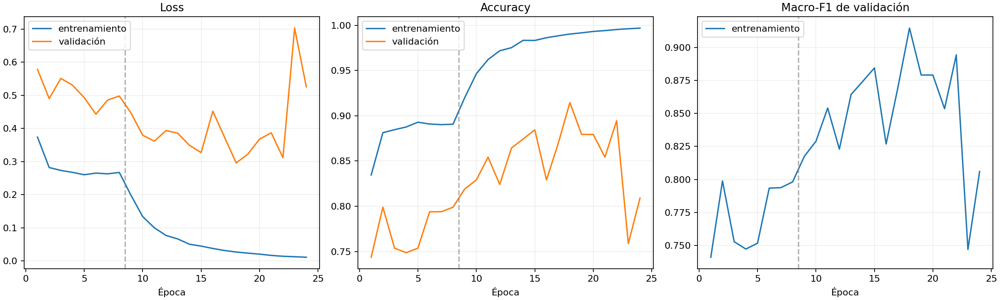
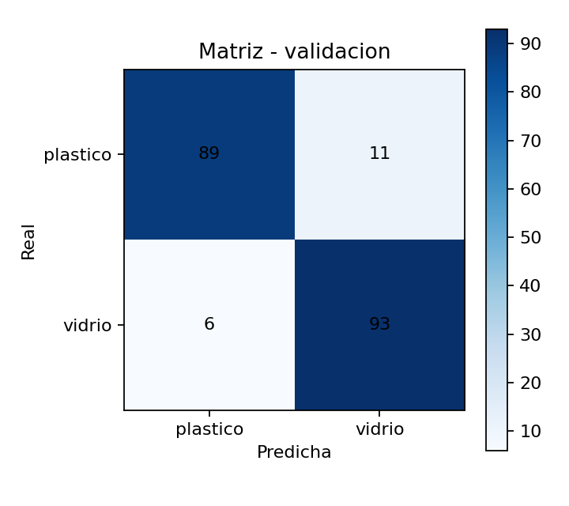

El usuario no siempre reconoce el material correctamente.
Proyecto integrador · 2026
RECI
Sistema inteligente de reciclaje asistido
Visión artificial · Sistema experto · Robótica · Plataforma web
Clasificación segura de plástico y vidrio.
01 / 16
01 · Problemática
El reciclaje falla cuando los residuos se mezclan.
La contaminación cruzada entre plástico y vidrio reduce el aprovechamiento y vuelve más lento el proceso.
El depósito convencional no orienta ni confirma la acción.
Los procesos manuales y la falta de retroalimentación reducen la motivación.
02 / 16
02 · Justificación
¿Por qué RECI?
◎
Separación correcta
Orienta al usuario desde el momento del depósito.
⌁
Educación e incentivo
Hace visible la decisión y devuelve una respuesta inmediata.
↗
MVP medible
Integra automatización, experiencia web y seguimiento dentro del campus.
RECI busca reducir errores de clasificación y mejorar la experiencia de reciclar.
03 / 16
03 · Integración del proyecto
Un proyecto integrador.
Cada materia aporta una parte esencial del MVP.
04 / 16
04 · Arquitectura general
Arquitectura híbrida de RECI.
3 capturas QVGA
MobileNetV2 local
o desconocido
compuerta segura
Plataforma webLlamadas al robot · puntos · QR · seguimiento
La IA no abre directamente una compuerta: primero pasa por una política de decisión segura.
05 / 16
05 · Flujo de funcionamiento
De la cámara a la compuerta.
- CapturaTres fotografías QVGA del residuo.
- DiagnósticoDos señales independientes por foto.
- VotaciónSe consolidan seis votos.
- OrdenSolo una decisión válida emite
CMD:CLASSIFY. - AcciónEl Mega abre una compuerta y luego la cierra.
Duda · error · empate no resoluble · respuesta incompleta → desconocido, sin apertura
06 / 16
06 · Tecnologías y comunicación
Tecnologías del MVP.
- ESP32-CAM AI Thinker + OV3660 para captura.
- Arduino Mega 2560 para sensores, rutas y compuertas.
- Python, FastAPI y TensorFlow Lite para visión local.
- Next.js, Supabase y API web para interacción y datos.
UART bidireccional segura
ESP32 GPIO14/TX → Mega D17/RX2
Mega D16/TX2 → divisor 1 kΩ / 2 kΩ → ESP32 GPIO13/RX
Servos: vidrio D3 · plástico D4
El divisor protege al ESP32 frente a los 5 V del Mega.07 / 16
07 · Sistema experto y política de decisión
Seis votos, una decisión explicable.
Proveedor + sistema experto
123
Tres respuestas: plástico, vidrio o desconocido.
+
MobileNetV2 local
123
Tres votos binarios sobre las mismas capturas.
6VOTOSUna salida segura
Las abstenciones no suman. En empate decide la mayoría del proveedor+sistema experto. Si sus tres respuestas son desconocidas, el modelo local necesita unanimidad 3/3. Si no hay evidencia suficiente: desconocido.
08 / 16
08 · Dataset y metodología experimental
Entrenamiento reproducible.
Imágenes indexadas por SHA-256 · división fija por sesión ESP32 · semilla de partición 42 · nueve corridas: tres arquitecturas × tres semillas.
09 / 16
09 · Implementación técnica y entrenamiento
Configuración reproducible.
1. CabezaAdam 1×10−3 · máximo 15 épocas · base congelada.
2. Ajuste finoAdam 1×10−5 · máximo 25 épocas.
3. ControlEarly stopping por macro-F1 · paciencia 6.
4. Función objetivoEntropía cruzada categórica dispersa.
5. AumentoVolteo horizontal · brillo ±30 · contraste 0,80–1,25.
Aumento aplicado solo a entrenamiento. El mejor checkpoint se selecciona con validación; la prueba reservada permanece intacta.
10 / 16
10 · Resultados experimentales
Resultados de los nueve experimentos.
Macro-F1 promedio · validación Keras float32
EfficientNet-B0
87,75 %
MobileNetV2
90,28 %
MobileNetV3-Large
93,63 %
9 corridas válidas
3 arquitecturas
3 semillas por arquitectura
El 93,63 % pertenece a validación controlada en Keras float32; no es el rendimiento del modelo desplegado.Una métrica alta en Keras no garantiza el mismo comportamiento en TFLite ni en la cámara real.
11 / 16
11 · Evaluación TFLite y pruebas operativas
Del laboratorio al hardware real.
ACTIVO · corrida histórica run_20260721_2129
MobileNetV2 · TFLite float32
Accuracy71,60 %
Macro-F171,25 %
75,15 %mayoría de tres capturas
RESPALDO · no desplegado
MobileNetV3-Large · TFLite INT8
Accuracy57,10 %
Macro-F157,09 %
59,09 %mayoría de tres capturas
Comparación operativa sobre 1.000 capturas OV3660/QVGA. No corresponde a la prueba reservada de 200 imágenes.
MobileNetV2 permanece activo porque conservó mejor calidad en el pipeline real.
12 / 16
12 · Curvas reales de entrenamiento
MobileNetV2 reentrenado · semilla 2.

entrenamiento
validación
inicio del ajuste fino
Gráfica real del pipeline reproducible; evidencia experimental del reentrenamiento, no del artefacto histórico activo.
13 / 16
13 · Evaluación por clase
Evaluación del MobileNetV2 reentrenado.
Semilla 2 · validación fija de 199 imágenes · partición con semilla 42

Métricas generales
91,46 %Accuracy
91,45 %Macro-F1
199 imágenes evaluadasPlástico
93,68 %Precision89,00 %Recall91,28 %F1
Soporte: 100 imágenesVidrio
89,42 %Precision93,94 %Recall91,63 %F1
Soporte: 99 imágenesEl MobileNetV2 reentrenado mantuvo un rendimiento equilibrado entre plástico y vidrio. El error más frecuente fue clasificar 11 imágenes de plástico como vidrio.
Resultados de validación del MobileNetV2 reentrenado con semilla 2. No corresponden a las métricas operativas del modelo histórico activo.
14 / 16
14 · Calidad y seguridad
Protección del MVP.
Pruebas automatizadas, reglas verificables y comportamiento seguro.
El cambio o comparación de modelos no modifica las reglas, la política de votación, el firmware ni las condiciones de seguridad.
15 / 16
15 · Cierre y propuestas de mejora
RECI decide con evidencia.
Visión artificial · sistema experto · robótica · plataforma web
Estado actual
- MobileNetV2 TFLite float32 permanece activo.
- MobileNetV3-Large INT8 se conserva como respaldo.
- El sistema experto tiene 118/118 casos formales aprobados.
- La integración Python–firmware mantiene paridad en 216 combinaciones.
- Los escenarios de error no generan órdenes de apertura.
- El MVP integra cámara, visión, backend y actuadores.
Próximos pasos
- Ejecutar una sola vez la prueba reservada de 200 imágenes.
- Mejorar la estrategia de cuantización de los modelos candidatos.
- Incorporar más ejemplos de plástico transparente y vidrio con reflejos.
- Ampliar pruebas con iluminación, fondos y posiciones diferentes.
- Evaluar el sistema completo durante un piloto controlado.
- Registrar precisión, latencia, abstenciones y errores.
- Mantener reversión antes de reemplazar el modelo activo.
No elegimos únicamente el modelo con la cifra más alta: elegimos el artefacto que conserva su calidad dentro del sistema real.
16 / 16